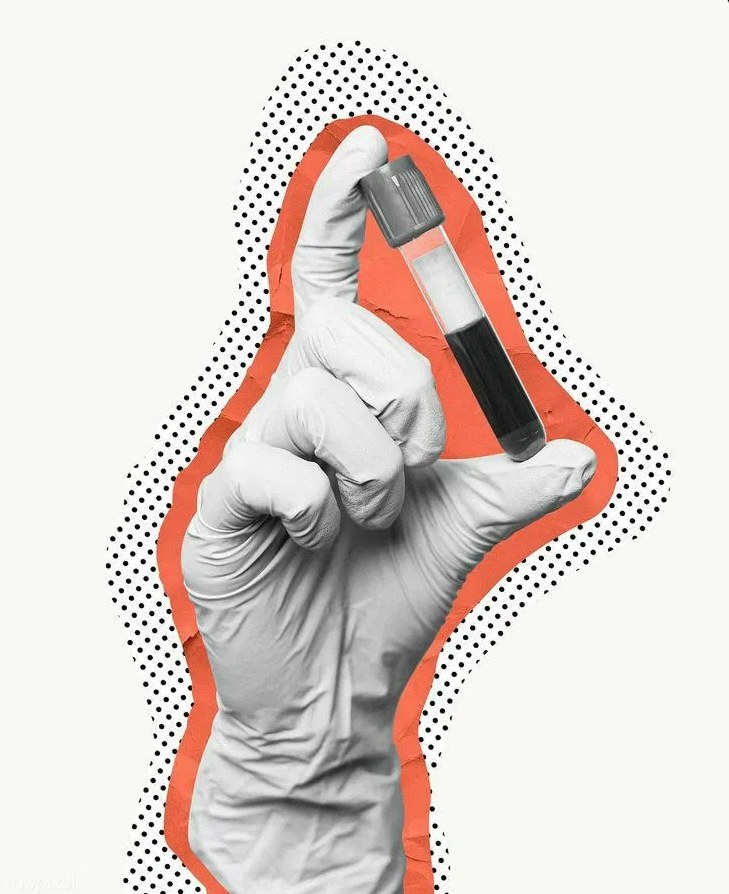

Rotas aéreas para o que não pode esperar.
Um protótipo acadêmico de rede de drones que leva órgãos, emergências e insumos de saúde à frente de qualquer outra carga, e usa entregas comerciais para ajudar a sustentar a operação.
P1 → P4
Prioridade definida pela carga
Corredores
Rotas fixas com pousos alternativos
No transporte de um órgão, o relógio começa antes da partida.
Depois de retirado do doador, cada órgão tolera um tempo limitado de preservação a frio. Em cidades grandes, o trajeto por terra depende de trânsito e bloqueios. O SADEC investiga se uma rede de drones com regras rígidas de prioridade pode tornar esse trajeto mais previsível.

- Coração4–6 h
- Pulmão4–8 h
- Fígado8–12 h
- Pâncreas12–18 h
- Rim24–36 h
Faixas citadas na literatura de transplantes; variam conforme protocolo e caso clínico. Exibidas apenas para ilustrar a escala do problema.
Enchentes e deslizamentos
Estradas bloqueadas isolam bairros justamente quando água, medicamentos e kits de primeiros socorros são mais urgentes.
Medicamento de uso contínuo
Idosos, pessoas com mobilidade reduzida e moradores de regiões afastadas têm dificuldade para buscar o tratamento todo mês.
Ruas lotadas de entregas
Muitas viagens diárias de moto e carro aumentam trânsito, acidentes e emissões. O SADEC transforma parte dessa demanda em receita para o cuidado.
Seis passos, um responsável por missão.
O pedido chega pelo canal certo
Cidadãos solicitam pelo site ou pelo Drone Bot. Hospitais, Central de Transplantes, Defesa Civil e lojas têm canais próprios.
- Tipo de carga e peso
- Origem, destino e prazo
- Quem solicita e quem paga
A fila se organiza sozinha
A prioridade vem do tipo de carga. Órgãos e emergências passam à frente e podem antecipar uma entrega comercial que ainda não decolou.
- P1 Órgãos, P2 Emergência, P3 Saúde, P4 Comercial
- Empate: ordem de chegada
- Clima e espaço aéreo verificados
O drone certo, não o primeiro
A Central escolhe o drone disponível mais próximo da filial adequada, desde que suporte a carga e tenha autonomia para toda a rota.
- Disponibilidade e carga máxima
- Toda entrega: ida e volta × 1,3 (reserva de 30%)
- Sem drone elegível: outro meio de transporte
Corredor fixo, acompanhado ao vivo
O planejamento considera as zonas de pouso seguro ao longo do caminho e as áreas que devem ser evitadas. Bateria, posição, temperatura e vibração são acompanhadas no voo.
- Zonas de pouso no corredor da rota
- Alerta à equipe médica fora da faixa térmica
Chegada confirmada
O recebimento registra o responsável, o horário, o destinatário, a identificação da carga e o estado da entrega.
- Código da missão e leitura do lacre
- Registro de recebimento
Registros anexados, drone revisado
Depois de cada missão o drone recarrega. Se houve incidente, segue para recuperação e manutenção e só volta à frota depois de liberado.
- Relatório da missão
- Manutenção após incidente
Quatro níveis. Nenhuma exceção.
A prioridade vem do tipo de carga, não de quem pede. Um nível mais alto pode antecipar um mais baixo, nunca o contrário.
- P1
Órgãos para transplante
Órgãos e tecidos em contêiner térmico lacrado, a pedido de hospitais ou da Central de Transplantes.
Antecipa qualquer entrega não decolada - P2
Emergências
Água, medicamentos e kits para regiões isoladas por enchentes e deslizamentos.
Antecipa P3 e P4 não decolados - P3
Saúde programada
Medicamentos de uso contínuo e insumos para quem tem mobilidade reduzida ou mora longe.
Agendada por janela - P4
Entregas comerciais
Pedidos de comércio local que ajudam a financiar a operação.
Só com drone ocioso
- P1 e P2 só antecipam uma entrega comercial antes da decolagem.
- Entrega comercial em voo é concluída antes de o drone ser reassociado.
- Órgãos só decolam se a bateria cobrir o consumo da rota com 30% de reserva.
- Sem drone elegível, a Central indica transporte alternativo.
O comercial sustenta. A saúde decide.
Uma frota só para emergências ficaria parada boa parte do dia. No modelo proposto, os mesmos drones fazem entregas comerciais nos intervalos, e essa receita ajuda a custear a operação de saúde.
Quem pede uma entrega comercial sabe de antemão que ela pode ceder lugar a um transporte de saúde. A espera é avisada, com nova previsão.
Conhecer o SADEC Delivery- P1
- P2
- P3
- P4
- Manutenção
Às 11h40, uma entrega do SDC-07 (em transparência) cedeu lugar a um transporte P1 antes de decolar e foi reatribuída ao SDC-14.
Um voo só começa quando o pouso de emergência já está decidido.
São requisitos de projeto: o que um sistema real precisaria garantir. Nenhum foi certificado por autoridade aeronáutica.
Simular uma paneCorredores aéreos pré-definidos
Com zonas de pouso seguro mapeadas em cada trecho.
Reserva de bateria obrigatória
Nenhum drone decola sem bateria para ida e volta × 1,3 (30% de reserva), em qualquer entrega.
Pouso seguro e manutenção
Em pane, o drone pousa na zona segura mais próxima, a ocorrência é registrada e ele segue para manutenção.
Contêiner lacrado e monitorado
Temperatura e vibração acompanhadas; fora da faixa, a equipe médica é alertada.
Regulação antes de tudo
Operar de verdade exigiria autorização da ANAC e do DECEA. O drone complementa, não substitui ambulâncias.
Menos incerteza entre quem doa e quem espera.
Trajetos previsíveis
Transporte urbano menos sujeito a trânsito, o que pode ampliar o aproveitamento de órgãos doados.
Acesso na periferia
Unidades distantes recebendo medicamentos e enviando amostras sem rotas terrestres longas.
Infraestrutura que se paga
Receita comercial cobrindo parte do custo de uma frota que existe, antes de tudo, para a saúde.
Hipóteses de pesquisa do projeto, não resultados medidos.
- ODS 3Saúde e bem-estar
- ODS 9Indústria, inovação e infraestrutura
- ODS 10Redução das desigualdades
- ODS 11Cidades sustentáveis
- ODS 13Ação climática